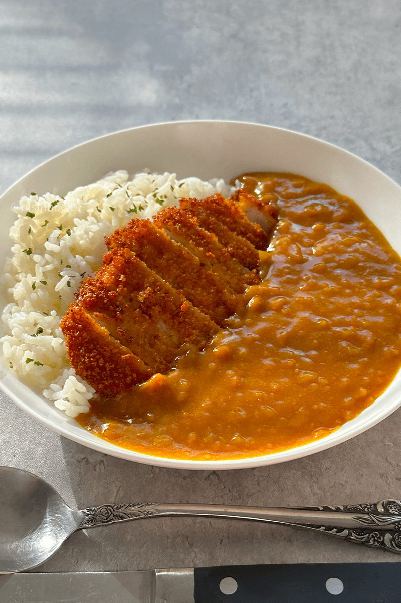
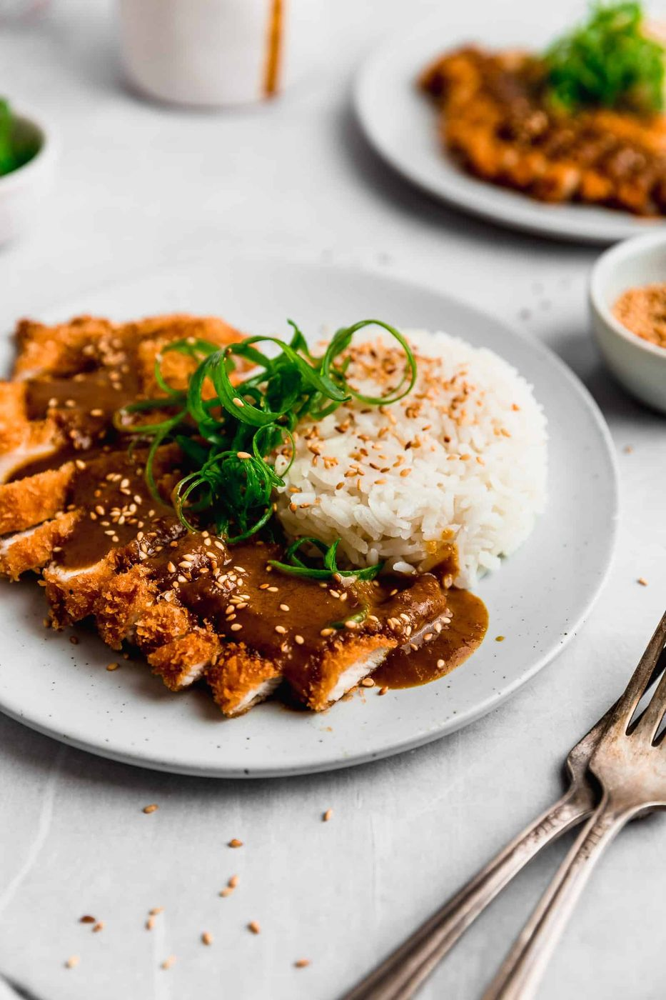

← Asian Kitchen
Chicken Katsu Curry
A panko-cutlet the size of your ambition, drowned in sweet Japanese curry. Sleep well after.
A panko-cutlet the size of your ambition, drowned in sweet Japanese curry. Sleep well after.
Katsu curry is the best of two imports: British-introduced curry powder turned Japanese over a century into thick, sweet, gently spiced sauce, and the Viennese schnitzel transplanted into panko-fried tonkatsu. Put them on rice together and you get Japan's favorite comfort plate — crunch against silk, rich against sweet.
The curry roux is worth making from scratch: butter and flour cooked dark, curry powder, garam masala, grated apple and a square of dark chocolate for depth. It takes twenty minutes and tastes like the expensive version of the block-shaped shortcuts — which, to be fair, are also good and fully respectable on a Tuesday.
serves 4 — tick items off as you shop; it saves as you go
Melt butter, cook onion until translucent. Add flour and cook, stirring, 3 minutes until it smells like shortbread. Add both spice powders and cook 30 seconds more — blooming the spices in fat is the difference between curry that tastes boiled and curry that tastes cooked.
Whisk in stock gradually — lumps are just future gravy, whisk them out. Add carrots, apple, soy, chocolate. Simmer 20 minutes until thick enough to plate in a wave. Taste: it should be gently sweet, warm, not spicy-forward.
Flour, egg, panko — press the crumbs on firmly. Chill 10 minutes; the breading hydrates and grips better.
Oil at 170°C / 340°F, medium-high. Fry 3-4 minutes per side to deep gold. Rest on a rack, never paper — trapped steam is the enemy of crunch. Slice across into strips so it fans over the rice.
Rice on one side, cutlet fanned over it, curry sauce ladled along the border — not over the whole cutlet, or the crunch dies. Shredded cabbage on the side, tonkatsu sauce for dipping if you have it.


Images are web-sourced via image search and self-hosted. Original sources:
https://z-cdn.chatglm.cn/image-search-mcp/images-ppt/0f985832a994.jpghttps://z-cdn.chatglm.cn/image-search-mcp/images-ppt/8465c5bd06dc.jpghttps://z-cdn.chatglm.cn/image-search-mcp/images-ppt/a2596a248837.jpghttps://z-cdn.chatglm.cn/image-search-mcp/images-ppt/acebb19403cc.jpghttps://z-cdn.chatglm.cn/image-search-mcp/images-ppt/b0a190cb6503.jpghttps://z-cdn.chatglm.cn/image-search-mcp/images-ppt/d48898f86e10.jpghttps://z-cdn.chatglm.cn/image-search-mcp/images-ppt/e3288fc11a7a.jpgVerified working videos — click a card to load the embed.


Powered by GitHub Issues — the backup kitchen. One issue per recipe; your comment lands in the repo.